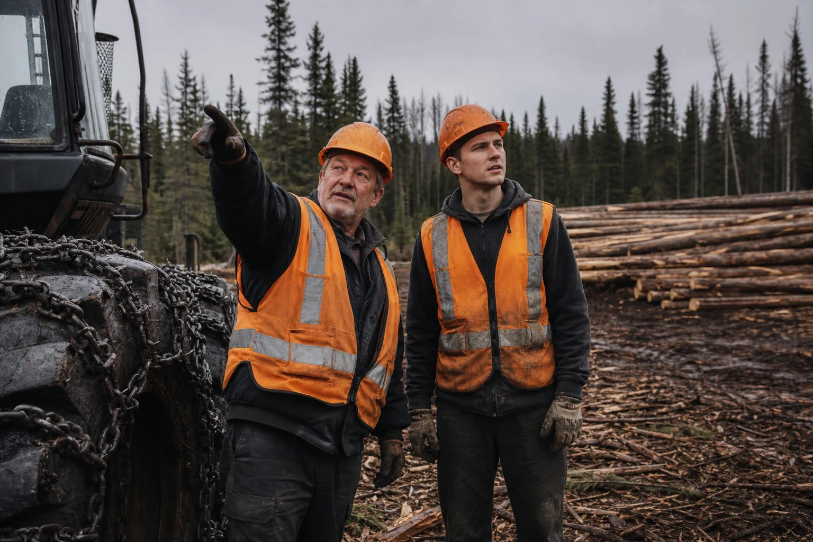
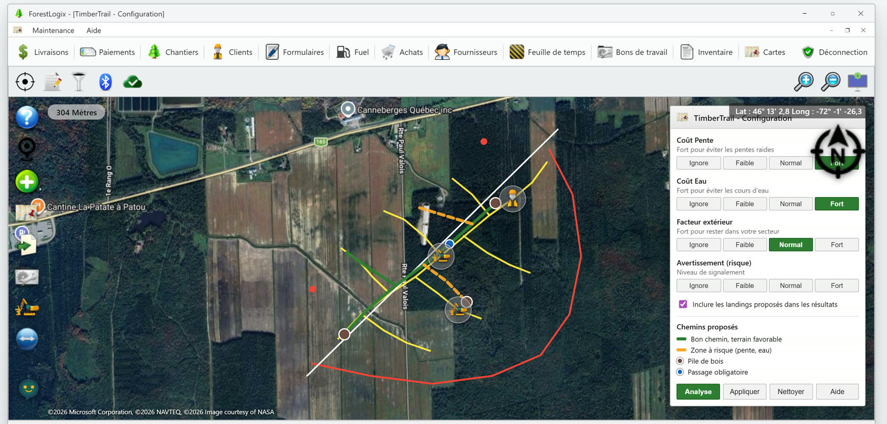

La job que personne ne compte
Il y a une job que personne ne compte, et c'est peut-être la plus chère de la semaine.
Un gars part à pied sur le bloc, souvent le plus expérimenté de l'équipe, celui qui est capable de lire un terrain. Il marche. Il regarde où ça monte, où c'est mou, où le ruisseau passe. Il revient trois ou quatre heures plus tard avec un plan dans la tête et deux ou trois traits sur une carte pliée. Et là, seulement là, le terrain peut être commencé.
Personne ne facture cet avant-midi à personne. Il disparaît dans le coût du chantier. Mais dans une industrie où on cherche du monde toute l'année, envoyer son meilleur employé marcher pendant une demi-journée pour une décision que le terrain a déjà déterminée, c'est une drôle de façon d'utiliser quelqu'un qu'on a eu de la misère à embaucher.
C'est exactement ce problème que le partenariat entre G.A. Logix et TimberTrail vient régler.
Ce que c'est, en une phrase
TimberTrail est un algorithme de calcul de chemins de débardage, développé en Suède, que G.A. Logix a intégré directement dans ses applications de terrain. L'opérateur ouvre ForestLogix sur la tablette de la cabine, ou MobileLogix sur son téléphone, place ses piles de bois sur la carte, ajuste trois réglages, pèse sur Analyse, et les chemins proposés apparaissent.
Pas d'outil séparé à ouvrir. Pas de contrat à signer avec un autre fournisseur. C'est dans ForestLogix et dans MobileLogix, sur la même carte que vos chantiers, vos traces et vos alertes. Sur la tablette de la cabine quand vous êtes dans la machine, sur votre téléphone quand vous êtes à pied dans le bloc.

Les six étapes, telles qu'elles sont dans l'application
L'aide intégrée du produit décrit le parcours en six étapes. On les reprend ici parce qu'elles montrent quelque chose d'important: ce n'est pas une boîte noire qui vous impose un chemin.
- Placer les piles de bois. Vous touchez la carte à l'endroit où vous voulez une pile. Vous gardez le doigt dessus pour la déplacer, vous double-cliquez pour l'effacer. C'est vous qui décidez où le bois va sortir.
- Tracer les chemins existants (optionnel). Si vous avez déjà des chemins de débardage sur ce secteur, vous les tracez sur la carte, point par point. Le calcul en tient compte au lieu de repartir de zéro.
- Marquer les passages obligatoires (optionnel). Il y a un pont, une traverse, un endroit précis où le chemin doit passer, et vous êtes le seul à le savoir. Vous le marquez sur la carte. C'est là que votre connaissance du secteur entre dans l'outil.
- Ajuster les paramètres. Trois réglages, chacun sur quatre crans, du plus faible au plus élevé. On y revient dans une minute, c'est le coeur de l'affaire.
- Lancer l'analyse. Vous pesez sur Analyse. Les chemins proposés s'affichent sur la carte, en couleur.
- Appliquer les résultats. Si ça fait votre affaire, vous pesez sur Appliquer. Sinon, vous changez un réglage et vous relancez. Ça prend quelques secondes, pas une autre demi-journée de marche.
Les trois réglages, et ce qu'ils veulent dire dehors
C'est la partie qu'un forestier comprend tout de suite, parce que ce sont exactement les trois questions qu'il se pose en marchant.
| Le réglage | Ce que l'aide du produit dit | Ce que ça veut dire sur le terrain |
|---|---|---|
| Coût Pente | « Fort pour éviter les pentes raides » | Vous acceptez un détour plutôt que de faire forcer la machine dans une côte |
| Coût Eau | « Fort pour éviter les cours d'eau » | Le calcul contourne l'eau au lieu de vous proposer un chemin qui la traverse |
| Facteur extérieur | « Fort pour rester dans votre secteur » | Le chemin ne va pas se promener chez le voisin pour sauver deux cents mètres |
Chacun a quatre positions: Ignore, Faible, Normal, Fort. Ce n'est pas un interrupteur, c'est un curseur. Sur un terrain sec en hiver, vous pouvez baisser le Coût Eau. Au dégel, vous le montez.
Il y a aussi un réglage d'avertissement, qui détermine à partir de quel niveau de risque le calcul vous signale une difficulté.
Vert et jaune: comment lire ce que l'outil vous propose
C'est là que TimberTrail se distingue d'un simple traceur de lignes. Les chemins ne s'affichent pas tous pareil:
- En vert: bon chemin, terrain favorable.
- En jaune: zone à risque, à cause de la pente ou de l'eau.
Autrement dit, l'outil ne se contente pas de vous donner une réponse, il vous dit où il est moins à l'aise. Un chemin jaune n'est pas une erreur, c'est un endroit où quelqu'un devrait aller voir, ou où l'opérateur devrait ralentir. Pour un contremaître qui envoie un employé moins expérimenté sur un secteur qu'il ne connaît pas, cette information vaut cher.
Et en cabine, sur la carte, l'opérateur a aussi une commande qui le dirige vers la pile de bois la plus proche. Pas besoin de se souvenir de laquelle était où.
Pourquoi un algorithme suédois
On aurait pu essayer de coder ça nous-mêmes à Plessisville. On ne l'a pas fait, et on l'assume.
Le calcul de chemins de débardage est un problème sur lequel les Scandinaves travaillent depuis longtemps, avec un volume de récolte mécanisée et une recherche forestière qui n'ont pas d'équivalent chez nous. Plutôt que de refaire moins bien, G.A. Logix a noué un partenariat avec TimberTrail et a intégré leur algorithme dans ForestLogix.
Pour vous, ça ne change rien à l'usage. Vous n'achetez pas TimberTrail à part, vous ne signez rien avec eux, vous ne gérez pas une deuxième licence. C'est une fonction de vos applications G.A. Logix, sur votre tablette comme sur votre téléphone.
Ce que ça change, c'est ce que vous pouvez répondre quand quelqu'un conteste votre plan de débardage. Le chemin n'a pas été décidé à l'oeil dans un pick-up: il a été calculé, avec des critères que vous pouvez montrer à l'écran.
Le savoir qui ne repart plus avec le camion
Il y a un aspect de cet outil dont on parle moins, et qui inquiète beaucoup de dirigeants qu'on rencontre.
Dans presque chaque entreprise forestière, il y a une personne qui sait. Elle a trente ans de métier, elle connaît chaque secteur, elle est capable de regarder un bloc et de dire par où passer. Ce savoir n'est écrit nulle part. Le jour où elle prend sa retraite, il part avec elle.
TimberTrail ne remplace pas cette personne, et il faut être clair là-dessus: un calcul ne remplace pas trente ans de terrain. Mais il rend explicites des critères qui vivaient dans une tête. Le Coût Pente, le Coût Eau, le passage obligatoire à la traverse: ce sont précisément les choses que le vétéran pesait mentalement. Une fois qu'elles sont dans l'outil, celui qui reste a un point de départ calculé plutôt qu'une page blanche.
Soyons clairs sur ce que ça ne fait pas
On préfère écrire les limites nous-mêmes.
Ce n'est pas une garantie du meilleur chemin dans tous les terrains. L'algorithme propose un chemin optimisé selon ses paramètres. La validation sur le terrain reste la responsabilité de l'opérateur. Un calcul ne voit pas la roche qui affleure sous la neige.
Ce n'est pas un outil de conformité. Le réglage Coût Eau fait éviter les cours d'eau au calcul, ce qui est utile en planification. Ce n'est pas la même chose que démontrer qu'une bande riveraine a été respectée. Cette démonstration reste à faire, et elle relève de l'ingénieur.
Ce n'est pas un produit G.A. Logix maison. C'est un partenariat, l'algorithme vient de Suède, et on l'écrit noir sur blanc plutôt que de laisser croire le contraire.
On ne vous promet pas de pourcentage. Vous verrez peut-être des fournisseurs annoncer des gains de tant pour cent sur la productivité du débardage. Nous, on vous dit ce qu'on observe chez nos clients: plusieurs heures de planification terrain économisées par chantier. Le reste dépend de votre terrain, et on n'a pas de chiffre validé à vous donner.
Pour qui ça vaut le plus
TimberTrail fonctionne pour toutes les opérations forestières, mais il ne donne pas la même valeur partout.
C'est sur les gros chantiers qu'il est le plus fort. Plus il y a de volume de bois récolté, plus l'optimisation a de la matière pour travailler, et plus la différence entre un bon chemin et un chemin ordinaire se multiplie sur la saison. Sur un petit lot de quelques hectares, l'opérateur d'expérience va souvent arriver au même résultat en marchant vingt minutes.
Si vous opérez sur de grandes surfaces, avec plusieurs machines et des équipes qui changent, c'est là que le calcul paie.
En résumé
Trois choses à retenir:
- Vos chemins de débardage se calculent dans ForestLogix et dans MobileLogix, sur la tablette de la cabine comme sur votre téléphone, sans outil séparé et sans marcher le bloc.
- Vous gardez le contrôle: vous placez vos piles de bois, vous marquez vos passages obligatoires, vous réglez la pente, l'eau et les limites de secteur. L'outil propose, vous appliquez.
- Les chemins s'affichent en vert quand le terrain est favorable, en jaune quand il y a un risque. L'outil vous dit où il est moins sûr.
Passe à l'action
Vous voulez voir ce que ça donne sur un de vos vrais secteurs, avec vos contraintes? Découvrez ForestLogix et MobileLogix, ou demandez votre démonstration gratuite en nous contactant.
Conçu et assemblé à Plessisville par l'équipe de G.A. Logix, avec un algorithme qu'on est allés chercher là où il était le meilleur.